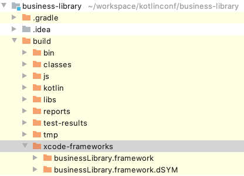

Now that we have a working Android application, we will try, and succeed, to use our Kotlin multi-platform library on iOS.
| You will be able to fulfill this part only if you have a MacOS computer. Otherwise, consider either following up with your neighbor, or skipping this chapter. |
Project Creation Wizard
By now you should have installed Xcode. Open it and create a new project:
Create a new Xcode project … |
|
Choose the project template: Single View App |
|
Enter the details of your application:
|
|
Choose the location of your iOS project |
|
|
Check the good configuration by clicking on |

Your Xcode environment is ready!
Adding your Kotlin multi-platform library to Xcode
Remember, while we were building our Kotlin multi-platform library, we added a build step named packForXcode.
This task should have built and published the framework needed by Xcode to consume our library with iOS in a specific directory.

To be able to use your newly generated framework you need to get you Xcode instance, and manually add it to the configuration.
Open your project settings, on the General tab. Then, in Framework, Libraries and Embedded Content click the |
|
We need to find our |
|
Browse to your |
|
You now see your |
Right now, if you try to build your application, it will fail. You also need to tell to Xcode where to look for the framework.
Open your project settings, on the Build Settings tab, with the filters All and Combined activated. Then find the Search Paths section |
Add the directory that contains your built |
Now that we have configured our project we will be able to use our Kotlin multi-platform library in Swift.
Using your Kotlin multi-platform library in Swift
Modifying the code
By using SwiftUI we do not need to change the view through an XML, or whatever view configuration files Xcode can work with.
Here we will only change one file, ContentView.swift to import our common code, and display our specific message to the screen.
|
Reminder
In our Kotlin multi-platform library we have defined the iOS target to be built as a build.gradle.kts
|
import SwiftUI
import businessLibrary (1)
struct ContentView: View {
var body: some View {
Text(ShowMessageKt.sayHelloKotlinConf()) (2)
.font(.system(size: 40))
.multilineTextAlignment(.center)
}
}| 1 | import the Kotlin multi-platform library package named as businessLibrary. |
| 2 | call the sayHelloKotlinConf() function defined in the ShowMessageKt class. |
Running the app
| Contrary to Android Studio there is no need to manually configure an iOS simulator. Xcode already provides simulators. |
Run the iOS application by clicking on the  button.
button.
Here we are ! We can see, displayed on the screen:
-
the common message:
Hello KotlinConf, Kotlin/Multiplatform is awesome! -
the iOS specific message:
We are running on iOS